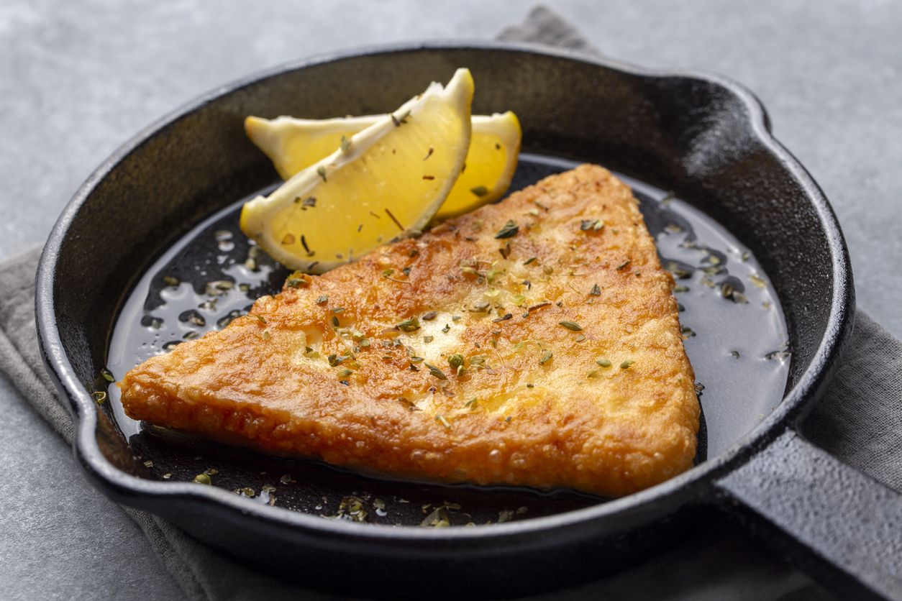

Home
Saganaki Recipe

Description
Saganaki is a popular Greek appetizer of pan-seared cheese, often served in a small, two-handled frying pan.
This is a simple recipe that makes a tasty starter.
Ingredients
- Flour
- Olive oil
- Cheese (obviously)
Steps
- Cover the surface of the cheese with cold water
- Dredge the cheese in flour
- Pan fry with olive oil
- Don't forget to flip!